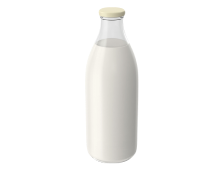

<section class="section">
    <div class="container">
        <h2 class="sectin-title">IT ALL ADDS UP TO ONE EXCEPTIONAL <span class="title-brand">TASTE</span> SENSATION</h2>
        <p class="section-description">At Simply Chocolate, we believe that the secret to exceptional chocolate is in the details. From the sourcing of the finest ingredients to the careful crafting of each individual piece, every step of our process adds up to one exceptional taste sensation.</p>
        <ul class="component-list">
            <li class="component-item">
                
                <p class="component-name">MILK CHOCOLATE</p>
                <div class="component-overlay">
                    <h3 class="overlay-title">MILK CHOCOLATE</h3>
                    <button class="overlay-component-button">chocolate</button>
                    <button class="overlay-bebefits-button">the benefits</button>
                    <p class="overlay-description">Milk chocolate is a solid chocolate confectionery containing cocoa, sugar
                        and milk. It is the most consumed type of chocolate. Chocolate was originally sold and consumed as a
                        beverage in pre-Columbian times. Although four-fifths of all milk chocolate is sold in the United
                        States and Europe, increasingly large amounts are consumed in China and Latin America.</p>
                </div>
            </li>
            <li class="component-item">
                
                <p class="component-name">MILK</p>
                <div class="component-overlay">
                    <h3 class="overlay-title">MILK</h3>
                    <button class="overlay-component-button">milk </button>
                    <button class="overlay-bebefits-button">the benefits</button>
                    <p class="overlay-description">Milk is a white liquid food produced by the mammary glands of mammals. It
                        is the primary source of nutrition for young mammals (including breastfed human infants) before they
                        are able to digest solid food.Early-lactation milk, which is called colostrum, contains antibodies
                        that strengthen the immune system, and thus reduces the risk of many diseases. Milk contains many
                        nutrients, including protein and lactose.</p>
                </div>
            </li>
            <li class="component-item">
                
                <p class="component-name">NUTS</p>
                <div class="component-overlay">
                    <h3 class="overlay-title">NUTS</h3>
                    <button class="overlay-component-button">nuts</button>
                    <button class="overlay-bebefits-button">the benefits</button>
                    <p class="overlay-description">Almonds, pistachios, and walnuts are some types of nuts that contain
                        healthy nutrients. When eaten as part of a nutrient-dense diet, these 9 nuts may offer benefits such
                        as reducing your risk of heart disease. They&#39;re a good source of fiber, healthy fats, and plant
                        protein. Plus, they&#39;re great on their own, paired with fruit, or added to dishes like salads,
                        desserts, and grains.</p>
                </div>
            </li>
            <li class="component-item">
                
                <p class="component-name">
            <li class="component-item">
                
                <p class="component-name">SEMI-SWEET CHOCOLATE</p>
                <div class="component-overlay">
                    <h3 class="overlay-title">SWEET CHOCOLATE</h3>
                    <button class="overlay-component-button">sweet chocolate</button>
                    <button class="overlay-bebefits-button">the benefits</button>
                    <p class="overlay-description">Semi-sweet chocolate has a cocoa solid content of 35 to 65%. One of the
                        best ways to gain an understanding of this type of chocolate is to compare it to a different type of
                        chocolate. Semisweet is darker than milk chocolate. In a taste comparison, it has a slightly bitter
                        taste whereas milk chocolate is sweeter and more mellow. This delectable flavor of chocolate is very
                        versatile.</p>
                </div>
            </li>
        </ul>
    </div>

</section>